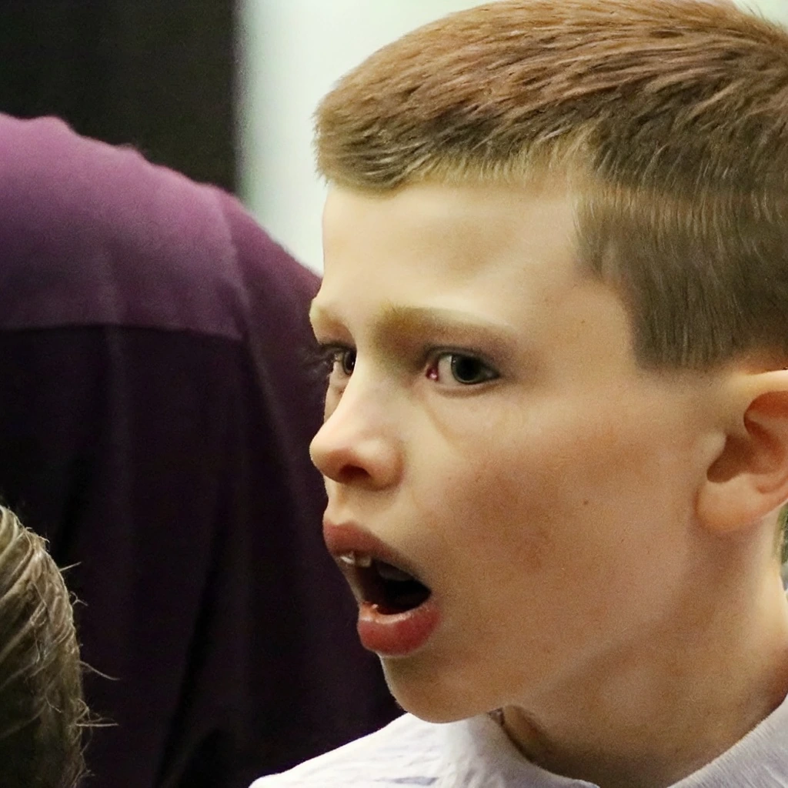
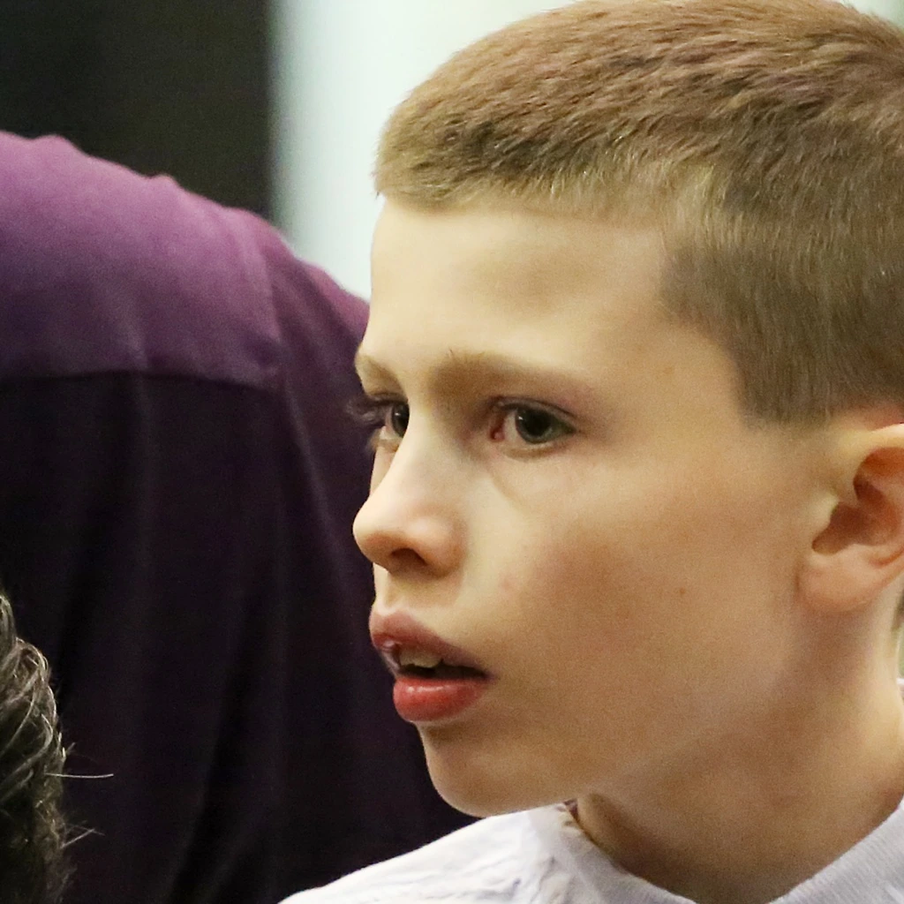

1 Harbin Institute of Technology, Shenzhen2 The Hong Kong University of Science and Technology
* Equal contribution · † Corresponding authors
Figure 01 Add, change, or remove. EditInfinity follows the target prompt while preserving the details that should stay.
Editing with fidelity.
01 / Overview
Change what you mean. Preserve what you don't.
EditInfinity brings text-driven image editing to Infinity, a binary-quantized generative model. Instead of relying on approximate inversion, it uses the source image's exact quantized representations as supervision for faithful reconstruction.
A learnable prompt refines textual conditioning, lightweight LoRA adaptation preserves visual style, and holistic smoothing blends source and target tokens across scales. Together, they support precise semantic edits with consistent structure and background.
01 — Invert
Exact supervision.
Recover source-image details with ground-truth quantized tokens.
02 — Adapt
Lightweight updates.
Optimize a learnable prompt and LoRA, keeping the base model frozen.
03 — Edit
Coherent changes.
Blend source and edited representations for smooth, faithful results.
A closer look at the edits.
02 / Explore
Three real examples from the released code. Select an example, then drag the divider to compare the original and edited images.


SourceEditInfinity
‹ ›
The edit
Thoughtful → surprised
Full-image editing changes the facial expression without a background-preservation mask.
Target prompt
Light-skinned boy with short hair looking surprised
← → Arrow keys also move the divider. These are precomputed results from the repository.
Explore all nine PIE-Bench editing tasks +Adding and deleting objects; changing object, content, pose, color, material, background, and style. See Figure 6 in the paper.
From exact tokens to precise edits.
03 / Method
The method follows two stages: reconstruct the source image, then edit it with controlled token blending.
I
Image inversion
Exact supervision, faithful reconstruction.
Quantize. Encode the source image into exact multi-scale tokens.
Rectify. Optimize a learnable prompt under direct token supervision.
Preserve. Freeze the prompt and adapt the FFN layers with LoRA to retain style and detail.
II
Image editing
Holistic smoothing, seamless changes.
Generate tokens conditioned on the target prompt and optimized learnable prompt. At each scale, a piecewise linear smoothing kernel blends the edited representation with source tokens. The blended tokens guide subsequent generation and are decoded into the final image.
Why both the learnable prompt and LoRA? +The learnable prompt improves semantic conditioning, while LoRA helps retain source-image style and detail. See Figure 7 in the paper.
Faithfulness, measured.
04 / Results
Evaluated on 700 PIE-Bench cases across nine editing types, EditInfinity achieves the best reported result across all seven metrics in the paper's main comparison.
27.95dBBackground PSNR ↑
92.12Background SSIM ×10² ↑
43.2%User preference
PIE-Bench comparison · Table 1 from the paper
Background preservation
CLIP similarity
Quality
Method
PSNR ↑
LPIPS ↓×10³
MSE ↓×10⁴
SSIM ↑×10²
Whole ↑
Edited ↑
IR ↑×10
P2P
17.87
208.80
219.88
71.14
25.01
22.44
0.017
MasaCtrl
22.17
106.62
86.97
79.67
23.96
21.16
−1.66
P2P-Zero
20.44
172.22
144.12
74.67
22.80
20.54
−6.59
NTI
27.03
60.67
35.86
84.11
24.75
21.86
2.77
PnP-Inv
22.46
106.06
80.45
79.68
25.41
22.62
4.17
NP
26.21
69.01
39.73
83.40
24.61
21.87
2.42
StableFlow
21.64
92.28
115.21
84.94
24.65
21.70
1.88
RF-Edit
23.22
131.18
75.00
81.44
25.22
22.40
5.18
Gemini 2.0
23.22
105.17
188.63
81.10
25.28
22.28
5.30
EditInfinity Ours
27.95
33.08
24.27
92.12
26.41
23.47
5.88
↑ Higher is better. ↓ Lower is better. IR: ImageReward. Values use the scaling reported in the paper.
Results across editing types and human preference. The user study involved 60 volunteers, each evaluating 20 cases from a pool of 140. The 43.2% value is a preference share, not a task success rate.
Make your own edits.
05 / Get started
The released code includes full-image editing, background preservation with a supplied mask, and automatic attention-based mask generation.
If you find EditInfinity useful in your research, please consider citing our work.
BibTeX
@article{wang2026editinfinity,
title={Editinfinity: Image editing with binary-quantized generative models},
author={Wang, Jiahuan and Chen, Yuxin and Yu, Jun and Lu, Guangming and Pei, Wenjie},
journal={Advances in Neural Information Processing Systems},
volume={38},
pages={50763--50790},
year={2026}
}